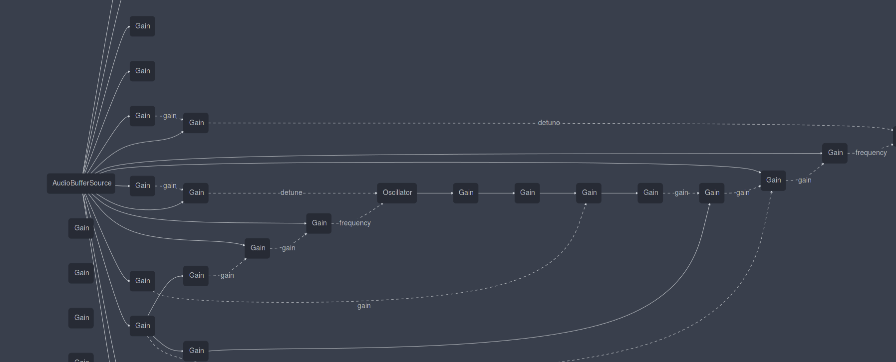

The WebAudio API
or how an idea becomes a standard
Matthew Wolff
Slides hosted at https://mwolff3.github.io/WebAudioPresentation/
Digital Audio: The Basics

What is a Web API?
- Browsers contain a ton of functionality
- Needs to render images, play video streams, run JavaScript, etc
- Developers want to do things too complicated for a JavaScript engine on its own
Sound familiar?
- Real-time graphics
- WebGL exposes low-level graphics functions to the web programmer's JavaScript environment
WebAudio
A web framework built into the browser that exposes low-level audio functions
How?
Graph metaphor
FireFox audio graph for this project
A closer look at a WebAudio graph
A graph connects nodes together. Audio in this case travels from the input of one node to the output of another node

Firefox Developer Edition users can see the graph in their developer tools

Developer Tools (usually F12) → Settings → Web Audio
Some basic types
AudioContextRepresents an audio graph, containing some environment information like sample rate and the sound destination (speakers)
AudioNodeA node in the graph that processes audio. Can have sources and destinations
AudioParamAn object that contains properties of audio. Usuall attached to
AudioNodes and can receive audio signals to modify their properties
Let's build a graph!
and make some sounds too!
The Oscillator node
function oscillate() {
window.audioCtx = (window.audioCtx || new AudioContext())
window.oscillator = audioCtx.createOscillator()
oscillator.frequency.value = 440
oscillator.connect(audioCtx.destination)
oscillator.start()
}
function stop() {
oscillator.stop()
oscillator.disconnect()
oscillator = null
}
The Gain node
function startGain() {
oscillator = audioCtx.createOscillator()
window.gainNode = audioCtx.createGain()
oscillator.connect(gainNode)
gainNode.connect(audioCtx.destination)
gainNode.gain.value = 0.05
oscillator.start()
}
function gainValue(event) {
if(gainNode)
gainNode.gain.value = event.srcElement.value
}
Modulation
AudioParams can receive signals too
function modulate() {
window.audioCtx = (window.audioCtx || new AudioContext())
moduloOsc = audioCtx.createOscillator()
var toneOsc = audioCtx.createOscillator()
rangeGain = audioCtx.createGain()
//amplify the modular oscillator from [-1.0, 1.0] (standard audio signal) to +/- this value (detune frequency)
rangeGain.gain.value = 0.0 //multiplication except for signals
//set modulation frequency to something not extreme
moduloOsc.frequency.value = 200 //how often we fluctuate the 'carrier frequency' from -gain to +gain
//central pitch of resulting tone
toneOsc.frequency.value = 440
//conect moduloOsc to the gainNode to amplify
moduloOsc.connect(rangeGain)
//connect the modulation part to the sound producing part
//connect the output wave (set of values flucutating between -40.0 and 40.0 at a rate of 40 cycles per second) to the frequency of the toneOsc
//this will fluctuate the frequency of the toneOsc, moving the wave from the pitch 440Hz between 400Hz and 480Hz at a rate of 40 fluctuations per second
rangeGain.connect(toneOsc.frequency)
//connect toneOsc to speakers
toneOsc.connect(audioCtx.destination)
//now start the oscillators
moduloOsc.start()
toneOsc.start()
}
Premade sound
We can load audio files into a node to do some processing on them
function decodeAndPlay() {
window.audioCtx = (window.audioCtx || new AudioContext())
//create an AudioBufferSourceNode
source = audioCtx.createBufferSource()
//Decode audio data. On completion execute function with AudioBuffer node containing decoded audio
var audioBuffer = audioCtx.decodeAudioData(audioData, (buffer) => {
//Add the buffer to the AudioBufferSourceNode
source.buffer = buffer
//keep track of this buffer
audioBuffer = buffer
source.connect(context.destination)
//what if smash mouth were anime?
source.detune.value = 1000
source.start()
})
}
Linking the AudioBufferSourceNode
An AudioBufferSourceNode is just like any other AudioNode
function chorus() {
mainSource = audioCtx.createBufferSource()
chorusSource = audioCtx.createBufferSource()
mainSource.buffer = audioBuffer
chorusSource.buffer = audioBuffer
var lfo = audioCtx.createOscillator()
var lfoGain = audioCtx.createGain()
lfoGain.gain.value = 50
lfo.frequency.value = 10
lfo.connect(lfoGain)
lfo.start()
lfoGain.connect(chorusSource.detune)
mainSource.connect(audioCtx.destination)
chorusSource.connect(audioCtx.destination)
mainSource.start()
chorusSource.start()
}
Flanger!
//https://github.com/cwilso/Audio-Input-Effects
//I got lazy
function flanger() {
window.audioContext = (window.audioCtx || new AudioContext())
var delayNode = audioContext.createDelay();
delayNode.delayTime.value = .005;
var inputNode = audioContext.createGain();
tone = audioContext.createOscillator()
tone.connect(inputNode)
var feedback = audioContext.createGain();
var osc = audioContext.createOscillator();
var gain = audioContext.createGain();
gain.gain.value = .002;
feedback.gain.value = .5;
osc.type = 'sine';
osc.frequency.value = 0.75;
osc.connect(gain);
gain.connect(delayNode.delayTime);
inputNode.connect( audioContext.destination );
inputNode.connect( delayNode );
delayNode.connect( audioContext.destination );
delayNode.connect( feedback );
feedback.connect( inputNode );
osc.start(0);
tone.start()
}
function stopFlanger() {
tone.stop()
}
Wow this stuff is easy
Where do I go to learn more?
https://developer.mozilla.org/en-US/docs/Web/API/Web_Audio_APIWoah nevermind that's really hard and complicated
Don't worry. Some smart dudes have made cool libraries
Tone.js (my personal favorite)
Really cool stuff people have done (videos)
Really cool stuff people have done (demos)